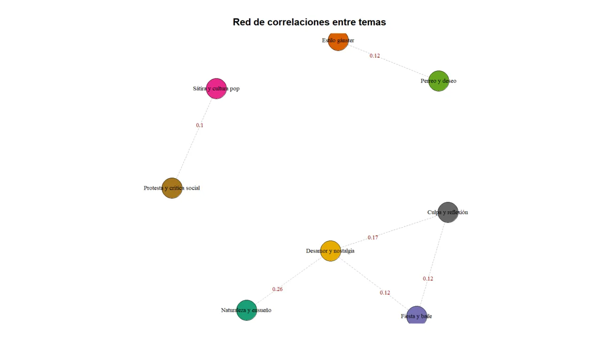

STM (K = 8): trayectorias de prevalencia de los tópicos
Prevalencia media (θ) por año. Clic en un tópico para ocultarlo o mostrarlo; doble clic para aislarlo (otra vez para mostrar todos).

10
STM (K = 8): prevalencia de temas según el modelo a lo largo del tiempo
prevalencia ~ s(año, df = 10), con banda de confianza del 95%. Eje vertical: proporción esperada del tema (escala propia por panel). Pasa el cursor para ver los valores.